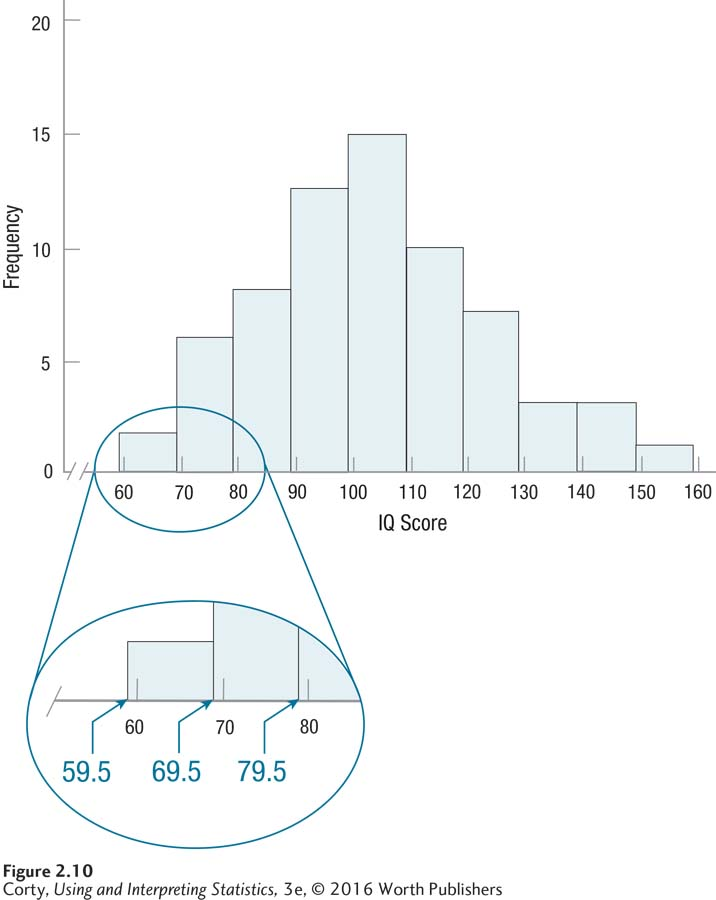

2.3 Graphing Frequency Distributions
“A picture is worth a thousand words” is a common saying. It’s time to put that saying into practice and explore visual displays of frequency distributions. Graphs, the subject of this section, can be used to display frequency information. With graphs, the information leaps out, whereas one has to work harder to find the information in a frequency distribution table.
Choosing which graph to use depends on whether the numbers are discrete or continuous. If the numbers are discrete, use a bar graph. If the data are continuous, use a histogram or a frequency polygon.
This chapter covers three different graphs for showing frequency: (1) bar graphs, (2) histograms, and (3) frequency polygons. Choosing which graph to use depends on whether the numbers are discrete or continuous. If the numbers are discrete, use a bar graph. If the data are continuous, use a histogram or a frequency polygon.
Decisions about which graph to use are often based on the level of measurement for the data—nominal, ordinal, interval, or ratio. Nominal- and ordinal-level data are discrete and should be graphed with a bar graph. Interval- and ratio-level data may be discrete or continuous. If the variable is discrete, use a bar graph. If the variable is continuous, use a histogram or frequency polygon. In actual practice, histograms and frequency polygons are often made for interval variables and ratio variables, whether the variable is continuous or not. In these instances, histograms or frequency polygons are used even if the data are discrete. Figure 2.6 is a flowchart summarizing the decision rules about how to choose the correct graph for a frequency distribution.
Bar Graphs
Bar graphs are used to demonstrate the frequency with which the different values of discrete variables occur. Sex, whether one is male or female, is a discrete variable. Table 2.11 shows a frequency distribution for the sex of students in a psychology class.
 StatClips: Summaries and Pictures for Categorical DataVideo on LaunchPad
StatClips: Summaries and Pictures for Categorical DataVideo on LaunchPad
55
Here’s how to turn this table into a bar graph. Graphs are usually wider than tall, so start by making the X-axis longer than the Y-axis. Figure 2.7 shows the template for the graph. The different categories of the variable, in this case male and female, go on the X-axis. The X-axis is labeled “Sex” and is marked “Male” and “Female.”
56
Frequency goes on the Y-axis, so it is labeled “Frequency” and marked off in equal intervals, by 10s, from 0 to 50. Why go up to 50? Because the largest frequency was 46 and the axis has to accommodate that value.
Note that, just as with tables, the graph has a detailed title, N is mentioned, and everything is labeled clearly. Obviously, it is a good idea to use graph paper and a ruler.
To complete the bar graph, all one needs to do is draw a bar above each category on the X-axis. Note that the bar goes up as high as the frequency of the category in Figure 2.8, the completed figure. This is called a bar graph because of the bars; note that all of the bars are the same width and they don’t touch each other. They don’t touch each other because the variable is discrete.
The advantage of a picture over words, of the graph (Figure 2.8) over the table (Table 2.11), should be obvious. In this bar graph, it jumps out that there were a lot more women than men in this class.
Histograms
A histogram is a graphic display of a frequency distribution for continuous data. It is like a bar graph in that bars rise above the X-axis, with the height of the bars representing the frequencies in the intervals. However, a histogram differs from a bar graph in that the bars touch each other, representing the fact that the variable is continuous, not discrete. In Figure 2.9, a template for a histogram for the sixth-grade IQ data from earlier in the chapter is presented.
There are several things to note in this histogram:
Even though the histogram is “empty” right now, it already has a detailed title.
Both axes are clearly labeled.
Frequency goes on the Y-axis and the values of the variable (in this case, IQ) go on the X-axis.
The Y-axis starts at zero and is marked off by 5s to a height of 20. This accommodates the largest frequency in the data set, 15.
57
The smallest value for IQ is 67, which is far away from a value of zero. If the X-axis started at zero, there would be a lot of blank space before the first interval. Instead, the X-axis starts at 60, the apparent lower limit of the first interval.
Note the discontinuity mark on the X-axis, which alerts people viewing the graph that the axis doesn’t start at zero.
The highest IQ value is 152, so the X-axis ends at 160, what would be the start of the next higher interval.
Figure 2.10 shows the histogram once it has been completed. Note:
Figure 2.21: Figure 2.10 Histogram Showing Grouped Frequency Distribution of IQ Scores for 68 Sixth Graders (Interval Width = 10) Histograms graph the frequency of continuous variables, so the bars touch each other. Note that the bars are as wide as the real limits of each interval, not the apparent limits. This is highlighted in the enlarged section of the graph.The bars go up as high as the frequency in the interval, 15 for the highest frequency.
Unlike a bar graph, the bars in a histogram touch each other because the variable being represented is continuous.
There is one tricky thing in a histogram—the bars go up and come down at the real limits of the interval, not the apparent limits. The first interval, 60 to 69, for example, really covers scores from 59.5 to 69.5 and the bar reflects that. Look at the enlarged section of Figure 2.10 to get a clear picture of this.
Frequency Polygon
A frequency polygon, sometimes called a line graph, displays the frequency distribution of a continuous variable as a line, not with bars. A frequency polygon differs from a histogram in another way: the frequencies “go to zero” at the beginning (the far left) and the end (the far right) of the graph. Whether one uses a histogram or a frequency polygon to represent a frequency distribution is a matter of personal preference—they both are legitimate options for graphing frequencies for a continuous variable.
58
Figure 2.11 shows a template for a frequency polygon for the sixth-grade IQ data:
Of course, there is a title and both axes are labeled.
Frequency, on the Y-axis, starts at zero and goes up, in equal intervals, to the first interval above the largest possible frequency.
The X-axis shows the midpoints of the intervals for the variable being graphed.
The lowest IQ score in the data set is in the interval with a midpoint of 64.5 and the highest in an interval with a midpoint of 154.5. But, two “extra” midpoints are displayed on the X-axis, one (54.5) below the lowest interval and one (164.5) above the highest interval.
Figure 2.12 shows the completed frequency polygon. It was completed by placing a dot above each midpoint at the level of its frequency and then connecting the dots. Note that the frequency for the very bottom and very top interval is zero. This is what was meant by saying that frequency polygons “go to zero” at the beginning and end of the graph.
59
60
There are a number of differences among the three graphs. Table 2.12 summarizes the differences among bar graphs, histograms, and frequency polygons.
Worked Example 2.3
What type of graph could one make for the property crime rate frequency distribution in Table 2.5. The data are rates, so they are continuous and one could make either a histogram or a frequency polygon. This author is partial to histograms, but there would be nothing wrong with choosing to make a frequency polygon instead. The completed histogram—wider than tall, with crime rate on the X-axis and frequency on the Y, all axes labeled and with a clear title—is shown in Figure 2.13.
Practice Problems 2.3
61
Review Your Knowledge
2.12 Match these two types of data, continuous and discrete, with the three types of graphs (bar graphs, histograms, and frequency polygons).
2.13 Where do the bars go up and come down for each interval on a histogram?
Apply Your Knowledge
2.14 A religion professor at a large university took a sample of 53 students and asked them what their religious faith was. Nine reported they were Muslim, 4 Buddhist, 2 Hindu, 16 Christian, 10 Jewish, 6 atheist, and 6 reported being other religions. Make a graph for these data.
2.15 A psychologist administered a continuous measure of depression to a representative sample of 772 residents of a midwestern state. Scores on the depression scale can range from 0 to 60 and higher scores indicate more depression. There were 423 with scores in the 0–9 range, 210 in the 10–19 range, 72 in the 20–29 range, 37 in the 30–39 range, 18 in the 40–49 range, and 12 in the 50–59 range. Make a graph for the data.